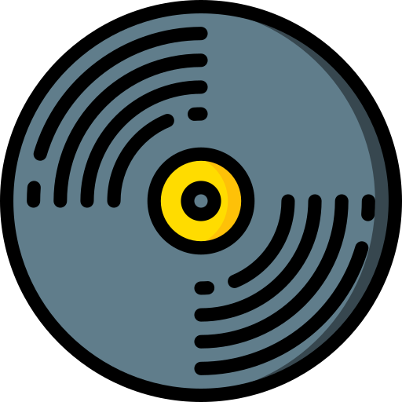

Design Culture Now es un enfoque que entiende el diseño como una práctica cultural que responde a los cambios del presente. Surge a partir de exposiciones y debates impulsados por instituciones como el Cooper Hewitt, Smithsonian Design Museum, donde se propuso que el diseño no se limita a crear objetos estéticos, sino que también construye experiencias, sistemas y formas de interacción. En este contexto, el diseñador deja de ser solo un creador visual y se convierte en un mediador entre la tecnología, la sociedad y las necesidades humanas. El diseño contemporáneo se observa como un reflejo de su época: incorpora herramientas digitales, se adapta a nuevos hábitos y cuestiona su propio impacto en la vida cotidiana.
En la actualidad, el diseño está profundamente ligado a la cultura digital y a los problemas sociales. Interfaces, aplicaciones, redes sociales y servicios urbanos son ejemplos de cómo el diseño influye en el comportamiento de las personas. Al mismo tiempo, enfrenta desafíos como la sostenibilidad, la accesibilidad y la ética tecnológica. Bajo la idea de Design Culture Now, el diseño se analiza no solo por su forma, sino por sus consecuencias: cómo organiza la información, cómo guía decisiones y cómo construye identidad. Así, el diseño se convierte en una herramienta cultural que participa activamente en la manera en que entendemos el mundo y nos relacionamos con él.